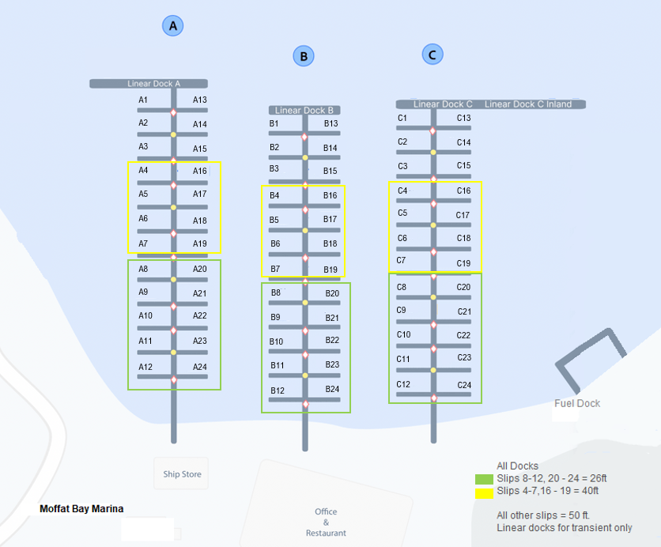

SLIP AVAILABILITY
Long-Term Slip Availability
Marina Slip Map
Reference layout showing Docks A, B, and C and the slip size for each position.

Prototype note:
The layout image will be interactive and allow the
user to select a slip. Letting them know which
slips are taken. The implementation will require more time to
research and design a full, intuitive user
interface. For now, this is a prototype meant to
illustrate our goals to the client.
Availability by Slip Size
Inventory across Docks A, B, and C. Linear docks are for transient moorage only and are not shown.
Where the Slips Are
Each dock (A, B, C) has 24 slips arranged the same way.
26 ft slips
Slips 8–12 and 20–24 on each dock
40 ft slips
Slips 4–7 and 16–19 on each dock
50 ft slips
Slips 1–3 and 13–15 on each dock
Linear docks
Transient moorage only
Prototype:
These counts are simulated with a prototype data file.
The final site should store these values in the official
project database.